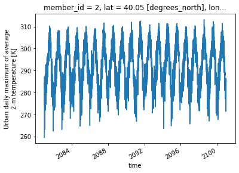
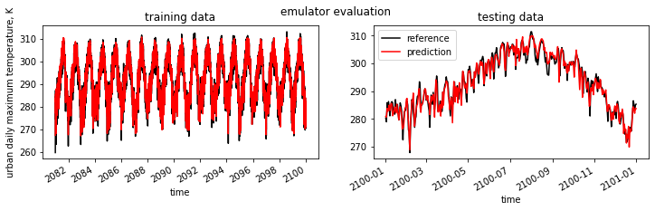

Example for CESM1
Reference:
- GitHub: https://github.com/ncar/cesm-lens-aws/
- Data/Variables Information: https://ncar.github.io/cesm-lens-aws/#data-catalog
- Reproduce CESM-LENS: http://gallery.pangeo.io/repos/NCAR/cesm-lens-aws/notebooks/kay-et-al-2015.v3.html
Step 0: load necessary packages and define parameters (no need to change)
[1]:
%%time
# Display output of plots directly in Notebook
%matplotlib inline
import matplotlib.pyplot as plt
import pandas as pd
import json
from flaml import AutoML
from sklearn.metrics import mean_squared_error, r2_score
import warnings
warnings.filterwarnings("ignore")
import util
with open("./config_cesm1.json",'r') as load_f:
# param = json.loads(json.load(load_f))
param = json.load(load_f)
model = param["model"] # cesm1
city_loc = param["city_loc"] # {"lat": 40.0150, "lon": -105.2705}
l_component = param["l_component"]
a_component = param["a_component"]
experiment = param["experiment"]
frequency = param["frequency"]
cam_ls = param["cam_ls"]
clm_ls = param["clm_ls"]
time = slice(param["time_start"],param["time_end"])
member_id = param["member_id"]
estimator_list = param["estimator_list"]
time_budget = param["time_budget"]
features = param["features"]
label = param["label"]
clm_var_mask = param["label"][0]
# get a dataset
ds = util.get_data(model, city_loc, experiment, frequency, member_id, time, cam_ls, clm_ls)
# create a dataframe
ds['time'] = ds.indexes['time'].to_datetimeindex()
df = ds.to_dataframe().reset_index().dropna()
if "PRSN" in features:
df["PRSN"] = df["PRECSC"] + df["PRECSL"]
# setup for automl
automl = AutoML()
automl_settings = {
"time_budget": time_budget, # in seconds
"metric": 'r2',
"task": 'regression',
"estimator_list":estimator_list,
}
/glade/work/zhonghua/miniconda3/envs/aws_urban/lib/python3.8/site-packages/xgboost/compat.py:31: FutureWarning: pandas.Int64Index is deprecated and will be removed from pandas in a future version. Use pandas.Index with the appropriate dtype instead.
from pandas import MultiIndex, Int64Index
--> The keys in the returned dictionary of datasets are constructed as follows:
'component.experiment.frequency'
100.00% [2/2 00:01<00:00]
CPU times: user 51.6 s, sys: 35.5 s, total: 1min 27s
Wall time: 59.9 s
Step 1: data analysis
xarray.Dataset
[2]:
ds
[2]:
<xarray.Dataset>
Dimensions: (member_id: 1, time: 7299)
Coordinates:
* member_id (member_id) int64 2
lat float64 40.05
lon float64 255.0
* time (time) datetime64[ns] 2081-01-02T12:00:00 ... 2100-12-31T12:0...
Data variables:
TREFHT (member_id, time) float32 255.8 266.8 271.1 ... 277.6 276.1
TREFHTMX (member_id, time) float32 269.3 278.4 281.2 ... 283.9 277.5
FLNS (member_id, time) float32 77.09 67.4 77.49 ... 64.89 37.45 38.35
FSNS (member_id, time) float32 83.31 88.83 90.25 ... 67.98 80.27
PRECSC (member_id, time) float32 0.0 0.0 0.0 0.0 ... 0.0 0.0 8.927e-12
PRECSL (member_id, time) float32 4.887e-10 6.665e-10 ... 9.722e-10
PRECT (member_id, time) float32 4.887e-10 6.665e-10 ... 2.32e-08
QBOT (member_id, time) float32 0.000913 0.001889 ... 0.005432 0.00492
UBOT (member_id, time) float32 5.461 4.815 4.506 ... 2.865 3.255
VBOT (member_id, time) float32 1.27 3.189 3.691 ... 1.215 0.8704
TREFMXAV_U (member_id, time) float32 259.6 270.0 279.8 ... 284.9 285.3
Attributes: (12/14)
intake_esm_varname: FLNS\nFSNS\nPRECSC\nPRECSL\nPRECT\nQBOT\nTREFH...
topography_file: /scratch/p/pjk/mudryk/cesm1_1_2_LENS/inputdata...
title: UNSET
Version: $Name$
NCO: 4.4.2
host: tcs-f02n07
... ...
important_note: This data is part of the project 'Blind Evalua...
initial_file: b.e11.B20TRC5CNBDRD.f09_g16.105.cam.i.2006-01-...
source: CAM
revision_Id: $Id$
logname: mudryk
intake_esm_dataset_key: atm.RCP85.dailypandas dataframe
[3]:
df.head()
[3]:
| member_id | time | TREFHT | TREFHTMX | FLNS | FSNS | PRECSC | PRECSL | PRECT | QBOT | UBOT | VBOT | lat | lon | TREFMXAV_U | PRSN | |
|---|---|---|---|---|---|---|---|---|---|---|---|---|---|---|---|---|
| 0 | 2 | 2081-01-02 12:00:00 | 255.849716 | 269.327850 | 77.085800 | 83.311066 | 0.0 | 4.886532e-10 | 4.886532e-10 | 0.000913 | 5.461293 | 1.270236 | 40.052357 | 255.0 | 259.641968 | 4.886532e-10 |
| 1 | 2 | 2081-01-03 12:00:00 | 266.790833 | 278.396545 | 67.402657 | 88.831192 | 0.0 | 6.664702e-10 | 6.665211e-10 | 0.001889 | 4.814545 | 3.189500 | 40.052357 | 255.0 | 269.972809 | 6.664702e-10 |
| 2 | 2 | 2081-01-04 12:00:00 | 271.122040 | 281.181946 | 77.493195 | 90.247482 | 0.0 | 8.030515e-14 | 2.538048e-11 | 0.003331 | 4.506459 | 3.690698 | 40.052357 | 255.0 | 279.828827 | 8.030515e-14 |
| 3 | 2 | 2081-01-05 12:00:00 | 276.329895 | 281.844543 | 64.789749 | 93.343193 | 0.0 | 1.896001e-20 | 2.508245e-09 | 0.004209 | 5.162941 | 4.963157 | 40.052357 | 255.0 | 282.674103 | 1.896001e-20 |
| 4 | 2 | 2081-01-06 12:00:00 | 275.347229 | 280.980469 | 69.647041 | 80.993706 | 0.0 | 5.442079e-17 | 7.844814e-09 | 0.004014 | 4.478484 | 4.272586 | 40.052357 | 255.0 | 283.518707 | 5.442079e-17 |
data visualization
[4]:
ds["TREFMXAV_U"].plot()
[4]:
[<matplotlib.lines.Line2D at 0x2b3bfa600a00>]

Step 2: automated machine learning
train a model (emulator)
[5]:
%%time
# assume that we want to split the data into training data and testing data
# let's use first 95% for training, and the remaining for testing
idx = df.shape[0]
train = df.iloc[:int(0.95*idx),:]
test = df.iloc[int(0.95*idx):,:]
(X_train, y_train) = (train[features], train[label].values)
(X_test, y_test) = (test[features], test[label].values)
# train the model
automl.fit(X_train=X_train, y_train=y_train,
**automl_settings, verbose=-1)
print(automl.model.estimator)
XGBRegressor(base_score=0.5, booster='gbtree',
colsample_bylevel=0.8981353296453468, colsample_bynode=1,
colsample_bytree=0.8589079860800738, gamma=0, gpu_id=-1,
grow_policy='lossguide', importance_type='gain',
interaction_constraints='', learning_rate=0.05211228610238813,
max_delta_step=0, max_depth=0, max_leaves=29,
min_child_weight=45.3846760978798, missing=nan,
monotone_constraints='()', n_estimators=299, n_jobs=-1,
num_parallel_tree=1, random_state=0, reg_alpha=0.01917865165509354,
reg_lambda=2.2296607355174927, scale_pos_weight=1,
subsample=0.9982731696185565, tree_method='hist',
use_label_encoder=False, validate_parameters=1, verbosity=0)
CPU times: user 3min 35s, sys: 2.67 s, total: 3min 38s
Wall time: 15.7 s
apply and test the machine learning model
use
automl.predict(X) to apply the model[6]:
# training data
print("model performance using training data:")
y_pred = automl.predict(X_train)
print("root mean square error:",
mean_squared_error(y_true=y_train, y_pred=y_pred, squared=False))
print("r2:", r2_score(y_true=y_train, y_pred=y_pred),"\n")
import pandas as pd
d_train = {"time":train["time"],"y_train":y_train.reshape(-1),"y_pred":y_pred.reshape(-1)}
df_train = pd.DataFrame(d_train).set_index("time")
# testing data
print("model performance using testing data:")
y_pred = automl.predict(X_test)
print("root mean square error:",
mean_squared_error(y_true=y_test, y_pred=y_pred, squared=False))
print("r2:", r2_score(y_true=y_test, y_pred=y_pred))
d_test = {"time":test["time"],"y_test":y_test.reshape(-1),"y_pred":y_pred.reshape(-1)}
df_test = pd.DataFrame(d_test).set_index("time")
model performance using training data:
root mean square error: 1.7566193
r2: 0.9681344385429989
model performance using testing data:
root mean square error: 2.3287773
r2: 0.9384653117109892
visualization
[7]:
fig, (ax1,ax2) = plt.subplots(1,2,figsize=(12,3))
fig.suptitle('emulator evaluation')
df_train["y_train"].plot(label="reference",c="k",ax=ax1)
df_train["y_pred"].plot(label="prediction",c="r",ax=ax1)
ax1.set_title("training data")
ax1.set_ylabel("urban daily maximum temperature, K")
df_test["y_test"].plot(label="reference",c="k",ax=ax2)
df_test["y_pred"].plot(label="prediction",c="r",ax=ax2)
ax2.set_title("testing data")
plt.legend()
plt.show()
